21 octobre 2026 · Références visuelles, sources, instructions et essais de mouvement.
Point de départ : l’image signature est retenue. Les MP4 sont des essais de cadrage et de lumière, avec personnages fixes. L’animation réelle des gestes, l’intégration et la recette WhatsApp restent à exécuter. Les scènes sont illustratives, pas des photos de vrais clients.
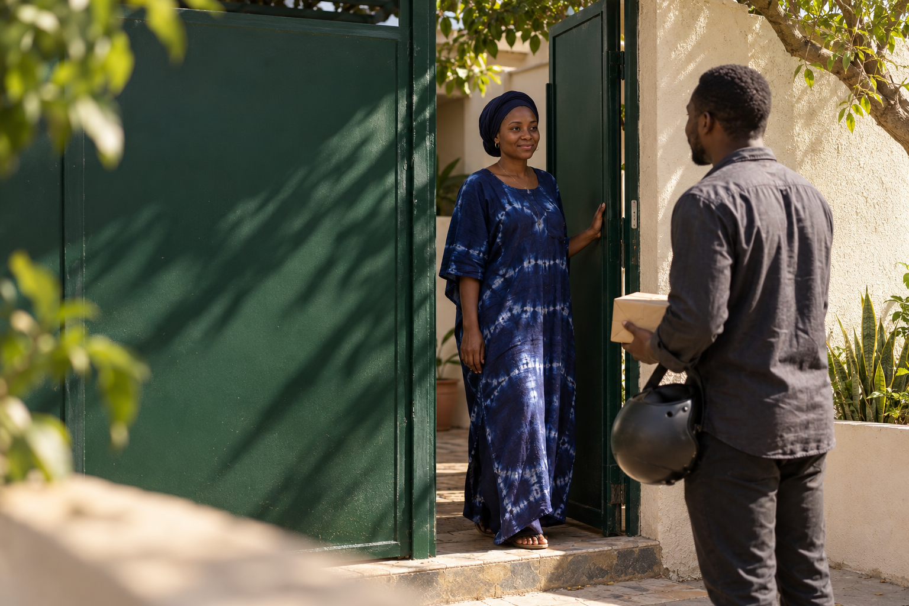
Image signature retenue · illustration générée
Source complémentaire · illustration générée
Essai 5 s · caméra et lumière · personnages fixes
10 maquettes. Les photographies intégrées aux anciennes captures v2 sont conservées pour historique ; les sources dédiées ci-dessus sont la référence courante.
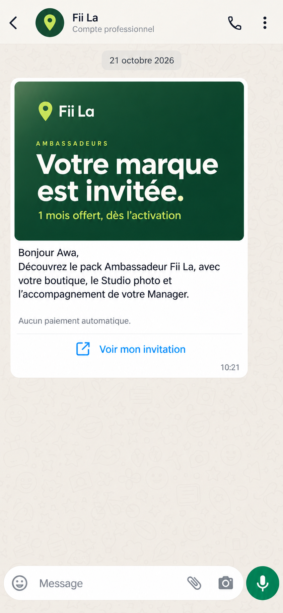
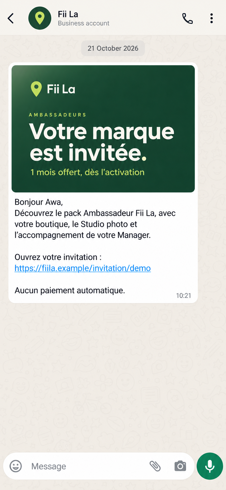
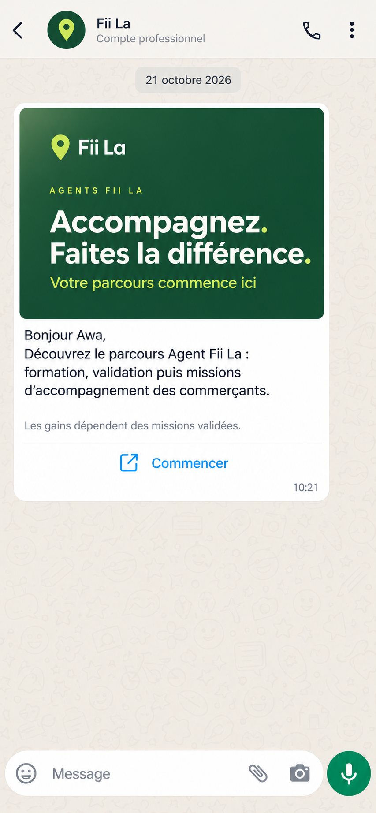
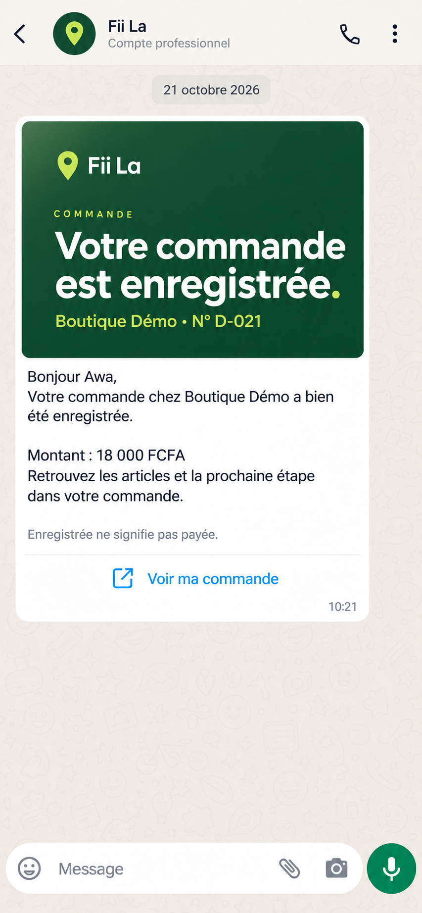
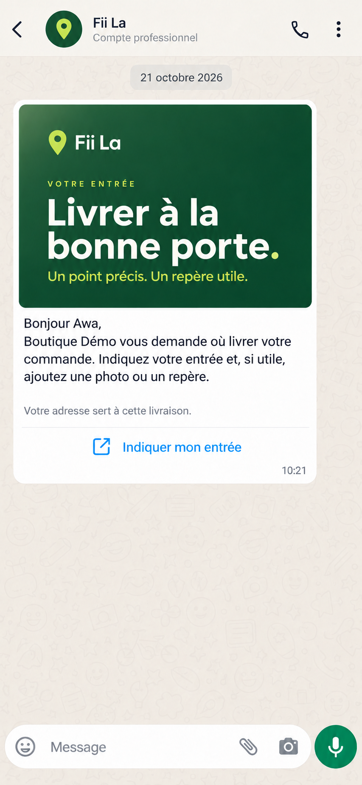
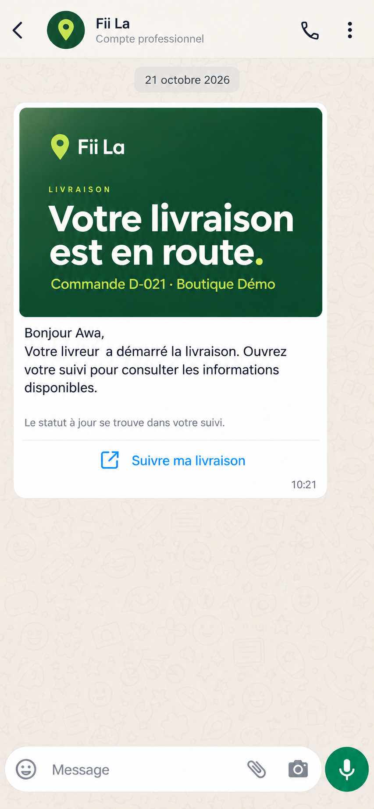
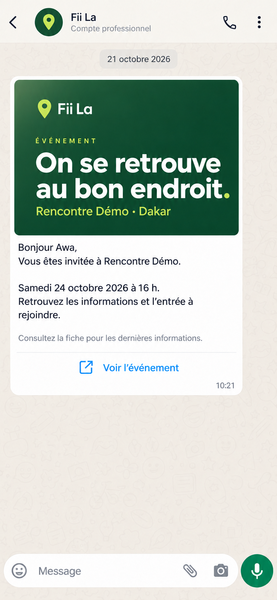
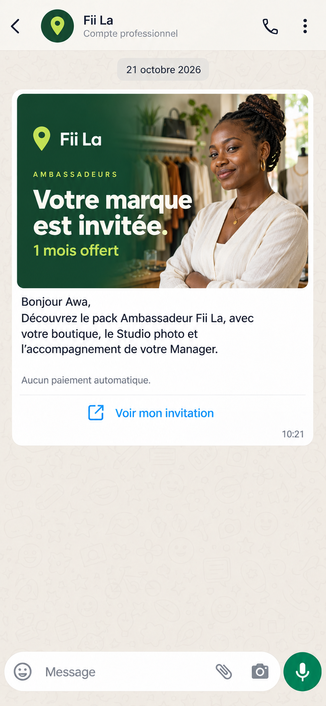
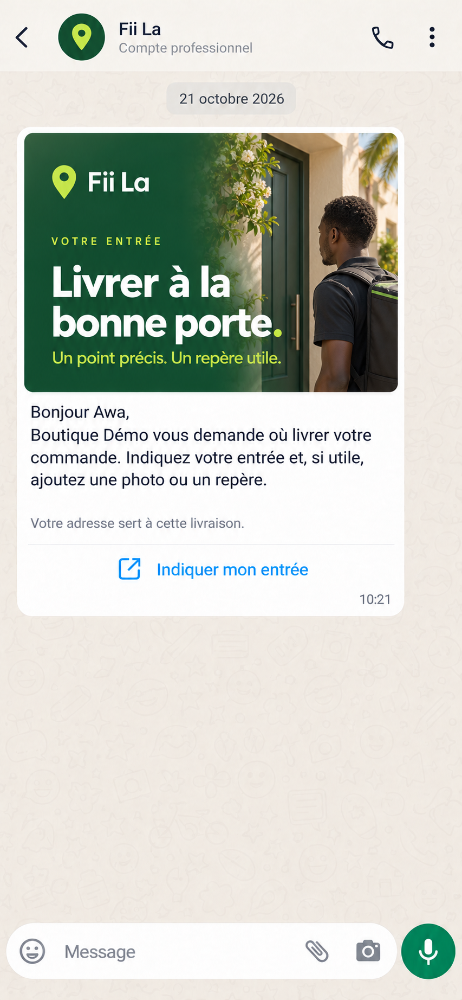
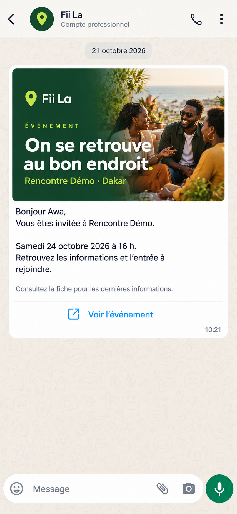